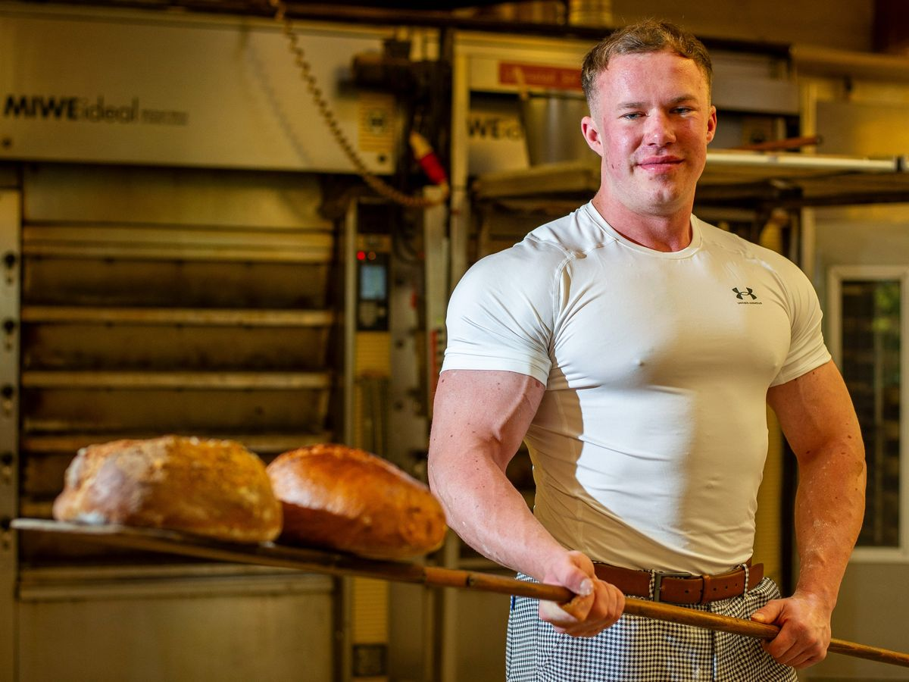

Ein Familienunternehmen, wie es im Buche steht
Die Bäckerei Eichholz wurde 1890 von Heinrich Wuth gegründet – dem Großvater von Jürgen Eichholz. Für Jürgen stand schon in jungen Jahren fest, dass er das Bäckerhandwerk erlernen und den Familienbetrieb eines Tages weiterführen würde.
Am 1. Januar 1986 übernahmen Jürgen und Susanna Eichholz den Betrieb. Während zu DDR-Zeiten nur ein einzelner Verkaufsladen möglich war, begann mit der Grenzöffnung 1989 eine stetige Expansion: 1990 eröffnete die erste Filiale in Eisenach. Heute gehören fünf Filialen in Mihla, Eisenach und Erfurt zur Bäckerei, ergänzt durch mehr als 20 Wiederverkäufer mit steigender Tendenz.
Heute führt Tim Eichholz die Bäckerei als Inhaber: Jürgen Eichholz hat den Familienbetrieb an seinen Sohn weitergegeben – und damit ein Handwerk, das die Familie seit 1890 begleitet, an die nächste Generation.

Heinrich Wuth gründet die Bäckerei Eichholz – der Grundstein für ein Familienunternehmen über Generationen.
Jürgen und Susanna Eichholz übernehmen die Bäckerei & Konditorei am 1. Januar.
Nach der Grenzöffnung eröffnet die erste Filiale in Eisenach – der Beginn der Expansion.
Jürgen Eichholz hat die Bäckerei an seinen Sohn Tim Eichholz übergeben. Fünf Filialen, mehr als 20 Wiederverkäufer und über 60 Mitarbeitende beliefern täglich einen Umkreis von rund 30 km – von Eisenach über Eschwege und Mühlhausen bis Richtung Gotha.
Tradition und Qualität, jeden Tag neu gebacken
Familientradition
Trotz des Wachstums ist die Bäckerei ein echter Familienbetrieb geblieben: Mit Tim Eichholz steht die nächste Generation selbst in der Backstube – und auch heute ist die gesamte Familie im Unternehmen eingebunden.
Frisches Handwerk
Backwaren und Konditoreiwaren entstehen täglich frisch und werden im Umkreis von rund 30 km ausgeliefert – für echten Geschmack ohne Umwege.
Sicherer Arbeitsplatz
Mit über 60 Mitarbeiterinnen und Mitarbeitern aus der Region bietet die Bäckerei Eichholz sichere Arbeitsplätze im Handwerk.